La Porte du Sahara et l'Âme des Oasis
Guelmim (en amazighe : ⴰⴳⵍⵎⵉⵎ, Aglmim, et en arabe : كلميم) est une ville du sud-ouest du Maroc, capitale de la région de Guelmim-Oued Noun. Elle est mondialement connue sous le surnom de « Bab Sahara » (la porte du Sahara).
Ancien centre caravanier majeur sur la route du commerce transsaharien, elle reliait le Maroc à Tombouctou et au Sénégal. Aujourd'hui, Guelmim est le point de rencontre entre les traditions sédentaires berbères et la culture nomade sahraouie, offrant des paysages contrastés allant des oasis luxuriantes aux dunes dorées et aux plages sauvages.
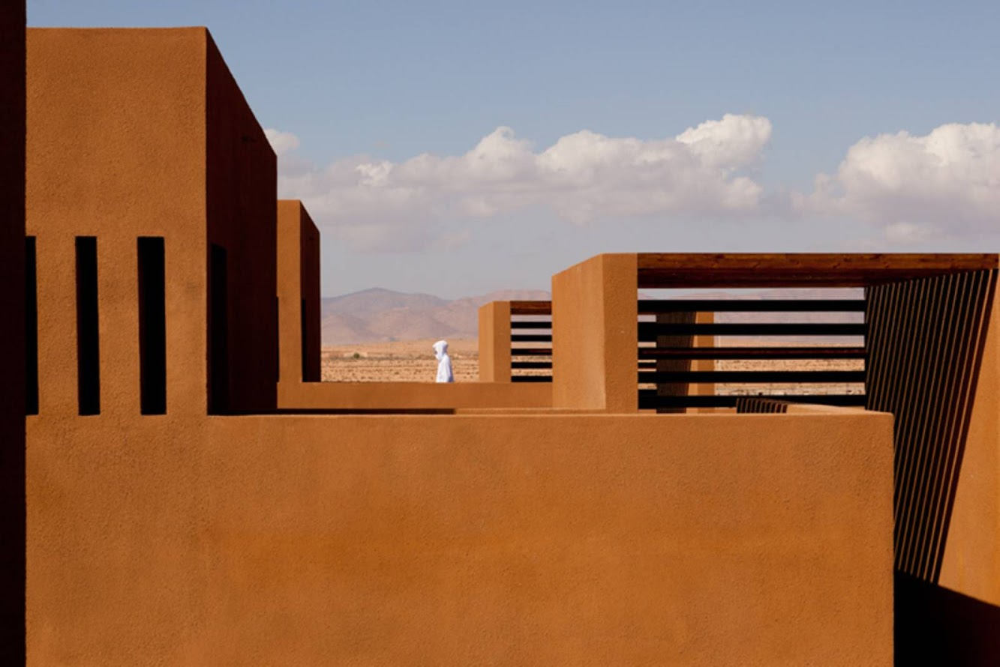
Architecture traditionnelle en pisé et paysages arides
Explorez les merveilles emblématiques de Guelmim.
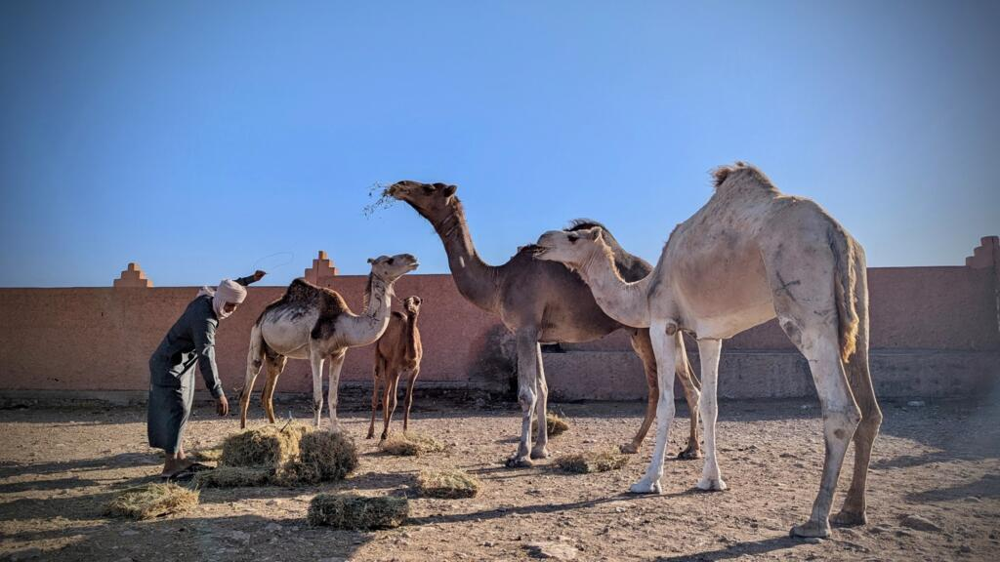
Guelmim abrite le plus grand souk aux dromadaires du Maroc, appelé Amhayrich. Chaque samedi à l'aube, les nomades du désert viennent y vendre leurs troupeaux. C'est un spectacle unique, bruyant, coloré et profondément ancré dans les traditions sahariennes.
Localiser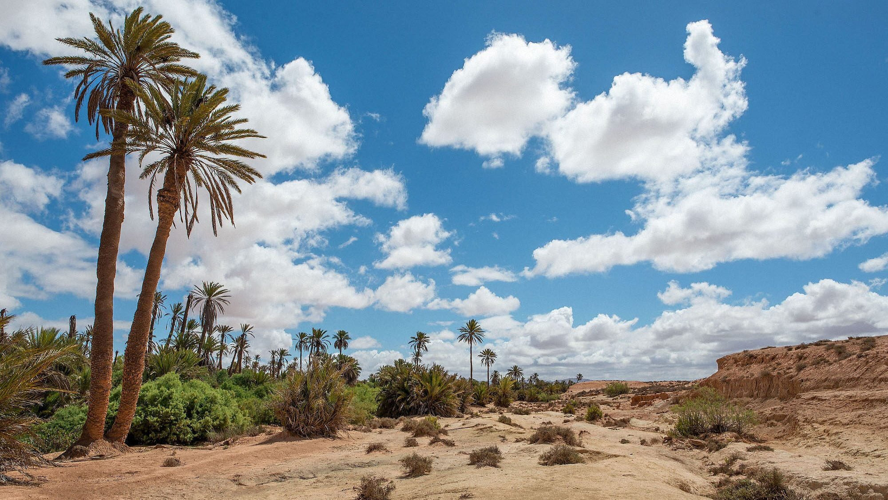
Située à une quinzaine de kilomètres de la ville, cette oasis luxuriante est un havre de paix. Vous pouvez vous y promener à l'ombre des palmiers dattiers, découvrir le système d'irrigation traditionnel (les séguias) et visiter les musées nomades locaux.
Localiser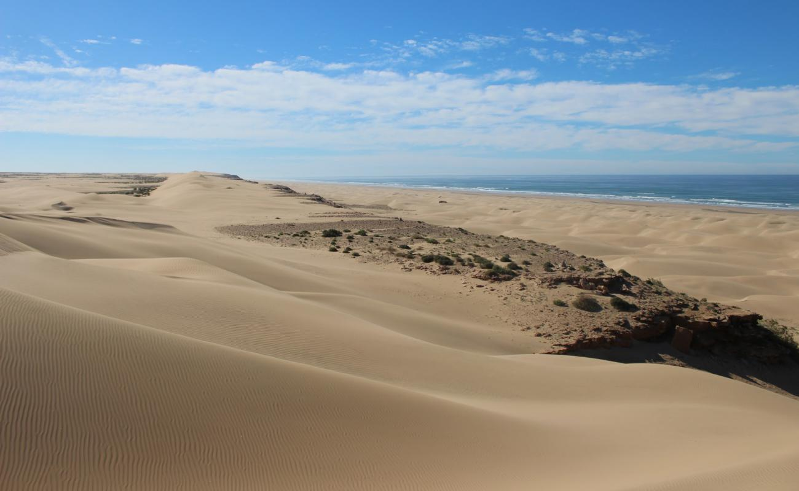
À environ 60 km de Guelmim se trouve ce joyau naturel. Surnommée ainsi par les explorateurs espagnols, c'est une immense étendue de sable vierge de près de 40 kilomètres de long, où les dunes du Sahara plongent directement dans l'océan Atlantique.
Localiser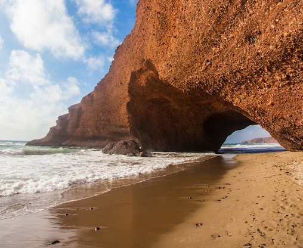
Située sur la côte atlantique, la plage de Legzira est mondialement célèbre pour ses majestueuses arches naturelles en roche rouge sculptées par l'océan. C'est un lieu magique, particulièrement prisé par les surfeurs et les amateurs de couchers de soleil spectaculaires.
LocaliserSélection d'établissements prestigieux pour votre séjour.
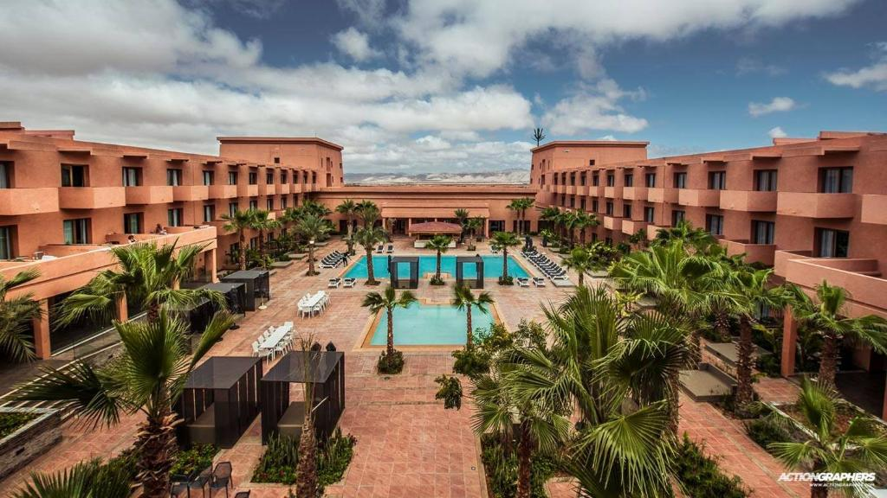
L'un des hôtels les plus modernes du centre-ville de Guelmim. Il offre tout le confort nécessaire (piscine, grandes chambres climatisées) tout en conservant une décoration subtilement inspirée de l'artisanat saharien.
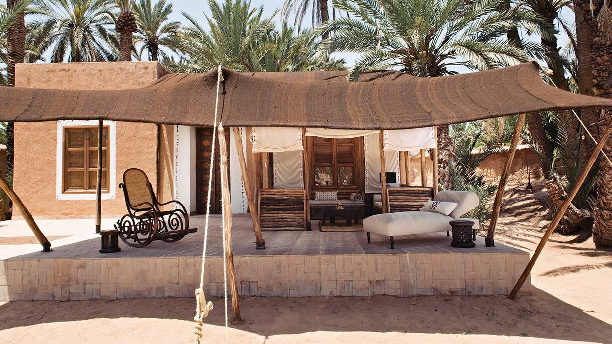
Pour une immersion totale, cette maison d'hôtes située au cœur de l'oasis de Tighmert est idéale. Construit en terre crue avec des toits en palmes, c'est un havre de paix écologique où l'accueil des hôtes est légendaire.
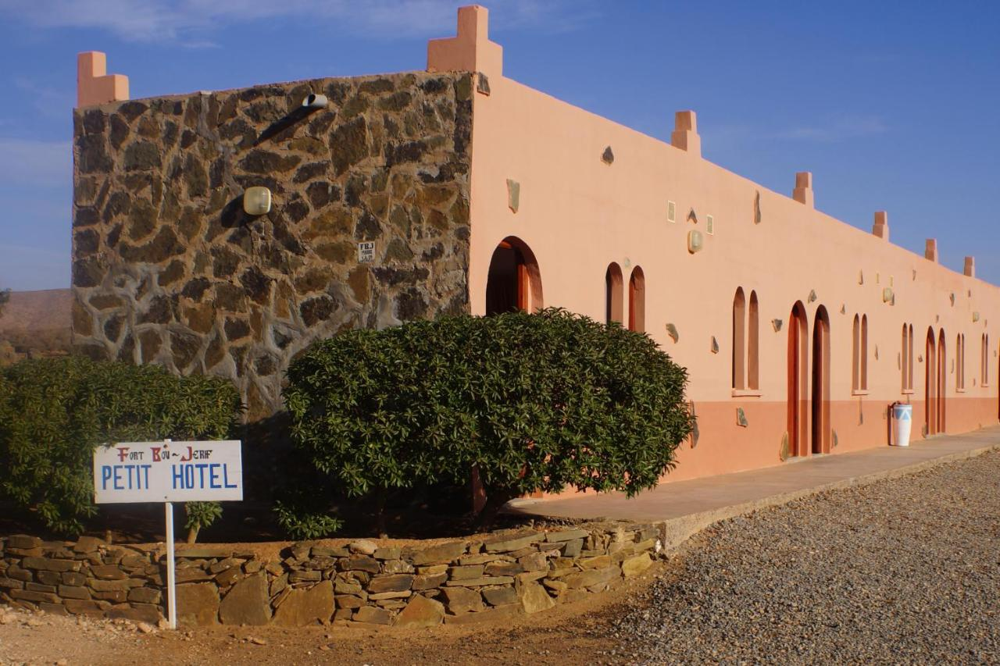
Ancien fort de la légion étrangère devenu un complexe touristique (motel et tentes nomades). Situé dans les terres sauvages entre Guelmim et l'océan, c'est l'étape parfaite pour les amoureux des grands espaces et du hors-piste.
Découvrez la richesse culinaire et les tables mythiques de Guelmim.
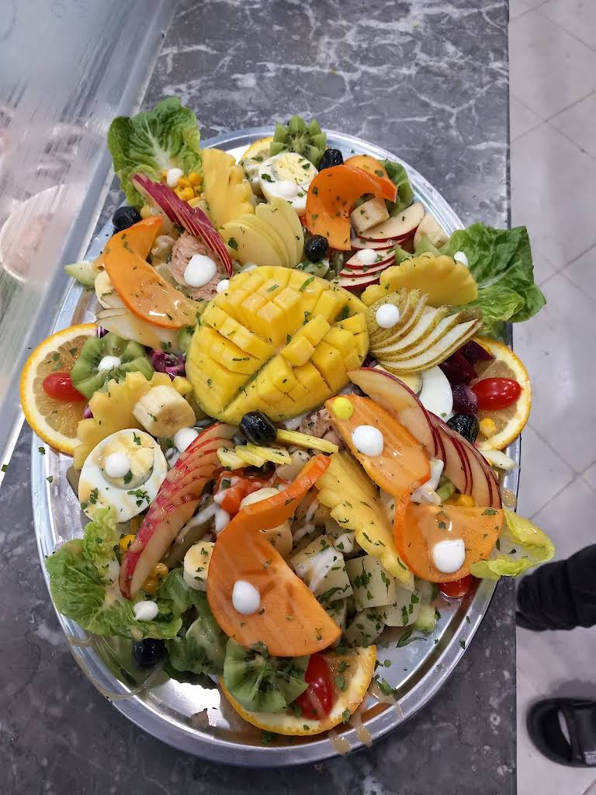
Dans les auberges de l'oasis, on sert sous les tentes caïdales les meilleurs plats traditionnels. C'est l'endroit idéal pour déguster un tajine cuit lentement au feu de bois avec des légumes frais cultivés directement dans les jardins environnants.
Localiser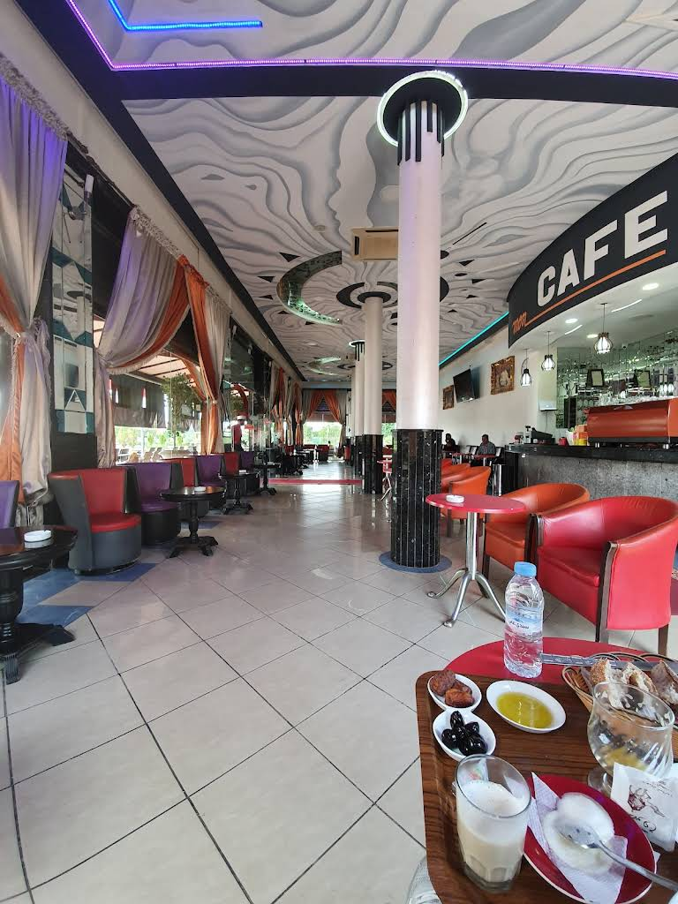
Une étape culinaire incontournable pour les voyageurs du Sud. Ce restaurant isolé est très célèbre pour sa grande spécialité : le tajine à la viande de dromadaire. Tendre, peu grasse et savoureuse, c'est une expérience gustative unique à essayer absolument.
Localiser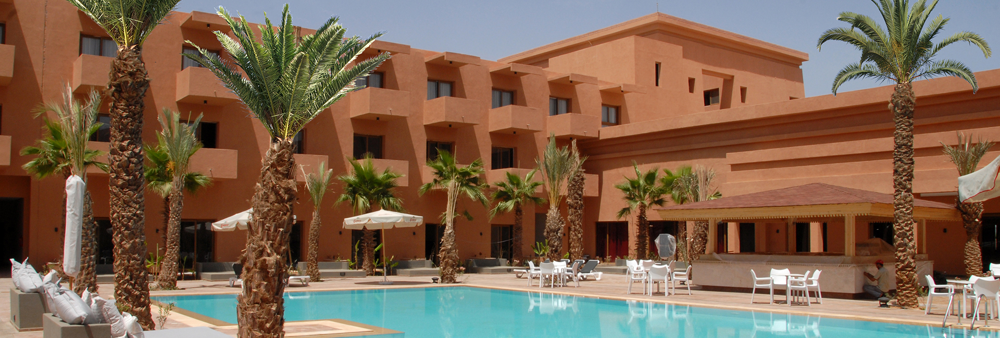
Pour ceux qui préfèrent rester en centre-ville, ce restaurant propose une carte variée alliant gastronomie marocaine raffinée (pastillas, couscous) et plats internationaux, dans un cadre frais, élégant et climatisé.
Localiser